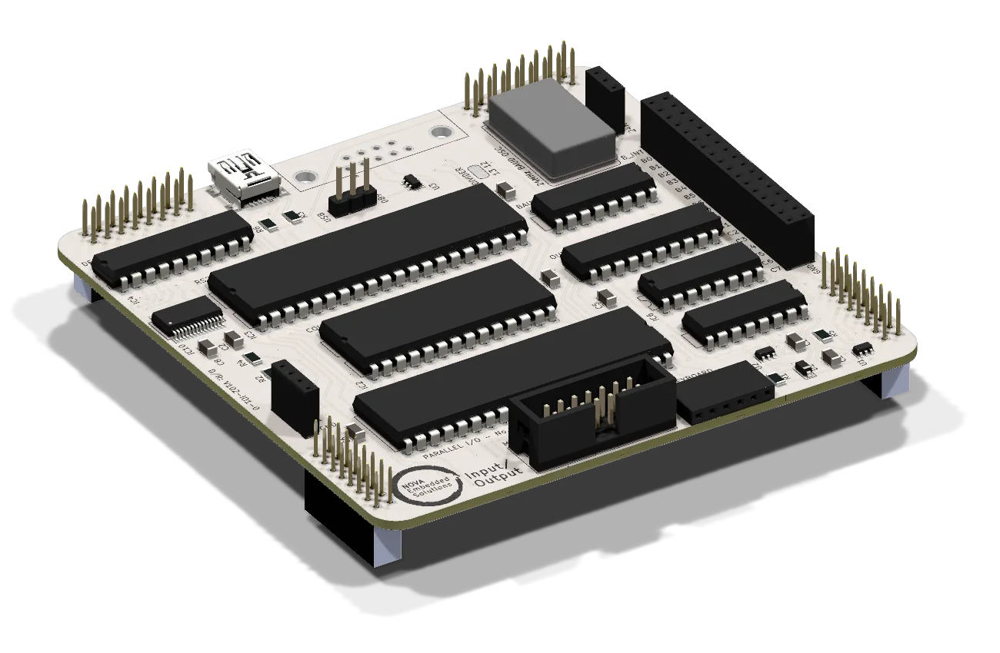
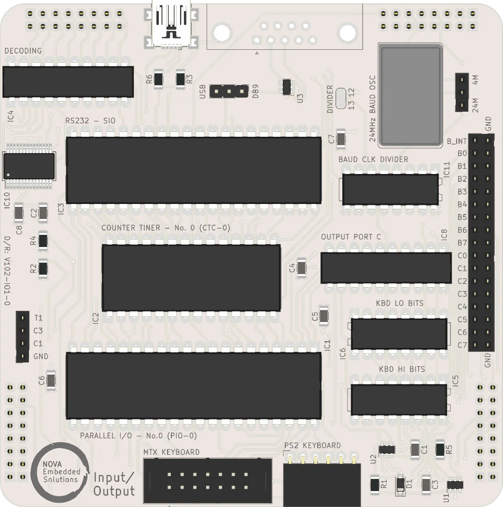

V102-IO1-0
I/O board
Serial, timers, parallel ports and two kinds of keyboard, shared by all three machines.
- Serial
- Z80 SIO at 0Ch, over USB or DB9
- Timers
- Z80 CTC at 08h
- Parallel
- Z80 PIO at 10h
- Keyboard
- PS/2 or MTX matrix
- Glue
- GAL16V8

What's on the board

How it works
- MTX-style map: CTC 08h, SIO 0Ch, PIO 10h, strobes and port C latch 05h–07h
- Head of the daisy chain: CTC → SIO → PIO → IEO1 into the CPU board. VDP interrupt on CTC ch0
- 24 MHz ÷ 13 = 1.846 MHz into CTC ch2, which clocks the SIO: 115 200 down to 4 800 baud via USB or DB9
- PS/2 keyboard shifted in by two 74HC595s; MTX keyboard strobes on J6
What it took
- Hardware PS/2 receiver: an RC timeout 100 µs after the last clock latches the byte to the PIO and interrupts. No bit-banging
- Re-synchronises on every frame, so a noise edge corrupts one key at most
- JP1 lets any logic family of 74x193 give the right baud division
- One board serves Z80, 6502 and MTX machines
Next revision
- DB9 is logic level only: add an RS-232 transceiver
- 1.8432 MHz oscillator to replace 24 MHz + '193 and free baud from bus CLK
- PS/2 pull-ups; tie off floating inputs; reset for port C
- Decoupling; use SIO channel A; buffer the keyboard cable
Schematic
Tap to open it full screen, then pinch, scroll or drag to explore. It stays sharp at any zoom.
Photo and files
Live photo: board-io1.jpgThe built I/O boardStraight down or three-quarter view, chips fitted, plain background.
Downloads
Read the PLD source, V102-IO1-00
Name V102-IO1-0 ; PartNo 00 ; Date 10/6/23 ; Revision 0 ; Designer Nigel ; Company xxx ; Assembly None ; Location ; Device g16v8a ; /* *************** INPUT PINS *********************/ PIN 1 = IORQB ; /* */ PIN 2 = A0 ; /* */ PIN 3 = A1 ; /* */ PIN 4 = A2 ; /* */ PIN 5 = A3 ; /* */ PIN 6 = A4 ; /* */ PIN 7 = A5 ; /* */ PIN 8 = A6 ; /* */ PIN 9 = A7 ; /* */ PIN 11 = RDB ; /* */ PIN 12 = WRB ; /* */ FIELD ADDR = [A7..A0] ; /* *************** OUTPUT PINS *********************/ PIN 19 = PORTCOUT ; /* */ PIN 18 = OUT5 ; PIN 17 = IN6 ; PIN 16 = IN5 ; PIN 15 = CTCB ; /* */ PIN 14 = PIOB ; /* */ PIN 13 = SIOB ; /* */ /* *************** LOGIC FORMULA *********************/ !PORTCOUT = (ADDR:7 & !IORQB & !WRB) ; /* output port 7 - 0000 0111 */ !CTCB = (ADDR:[8..B] & !IORQB) ; /* CTC1 IN and OUT 8,9,A,B */ !PIOB = (ADDR:[10..13] & !IORQB) ; /* PIO1 IN and OUT 10,11,12,13 */ !SIOB = (ADDR:[C..F] & !IORQB) ; /* SIO IN and OUT C,D,E,F */ !IN5 = (ADDR:5 & !IORQB & !RDB) ; !IN6 = (ADDR:6 & !IORQB & !RDB) ; !OUT5 = (ADDR:5 & !IORQB & !WRB) ;